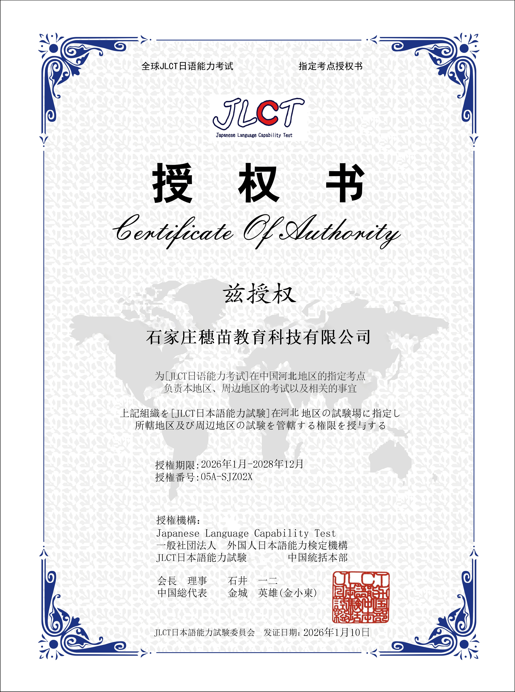
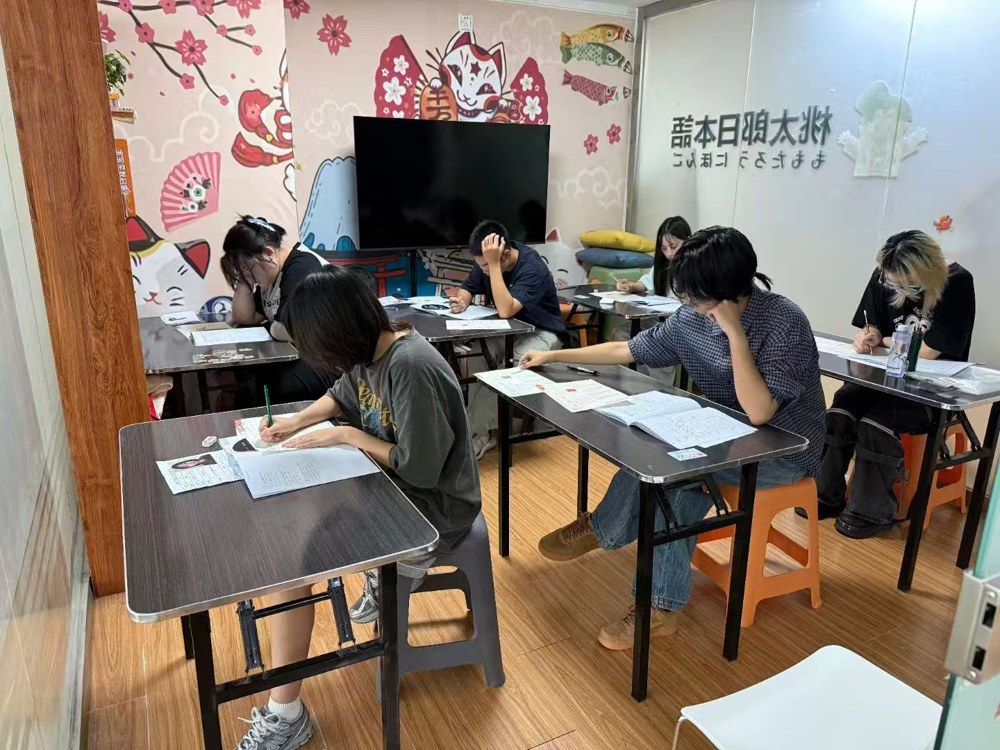
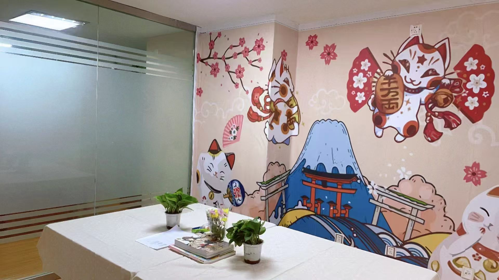

关于我们｜桃太郎日本语

日语，是通往世界的另一扇温柔而有力的门。无论是为高考提分、考研上岸，为赴日留学、海外升学，为JLPT/JLCT考级、职业进阶，还是出于兴趣、职场交流、文化热爱，日语都能为你打开更多人生选择。它门槛友好、实用性强、应用场景广泛，无论是学生、职场人、少儿还是爱好者，都能在学习中收获成长与底气。学好日语，不是多掌握一门语言，而是多拥有一种人生可能。
桃太郎日本语2014年扎根石家庄，深耕日语教育十余载，累计服务近8000名学员，是本地口碑成熟、教学专业、体系完善的日语培训品牌。我们覆盖高考日语、留学日语、JLPT考级、203考研日语、商务日语、兴趣日语、外教口语、少儿日语全品类班型，一站式满足升学、考级、留学、就业、兴趣等多元学习需求。
作为官方JLCT考试指定考点，我们实现培训—报名—考试一站式服务，学习更省心、出分更有保障。精品小班课堂、沉浸式语言环境、系统化课程体系，让每一位学员都能高效、无痛、开口即说，真正把日语学到能用、能考、能通关。
在桃太郎，教学从不只是上课，而是全程陪伴式成长。我们坚持资深专业师资+精品小班授课+沉浸式互动课堂，搭配主讲老师+专属助教双师督学，从课前预习、课中精讲到课后巩固、阶段测评，全程盯学、全程陪伴。
老师懂考试、懂教学、更懂学员，拒绝填鸭式教育，让日语学习轻松不费力。十余载沉淀，专业铸口碑，桃太郎日本语以实力与责任心，陪你稳稳学好日语，顺利抵达目标。


校区地址
校区地址
地址：石家庄市裕华区 筑业高新国际A座
电话：
15931212710
15032802517
营业时间：9:00-21:00